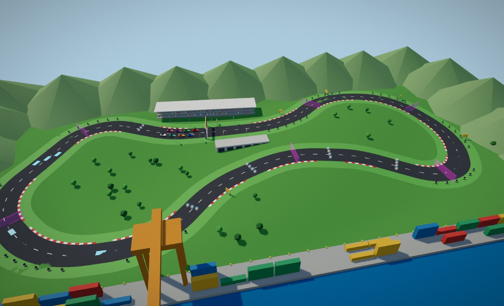
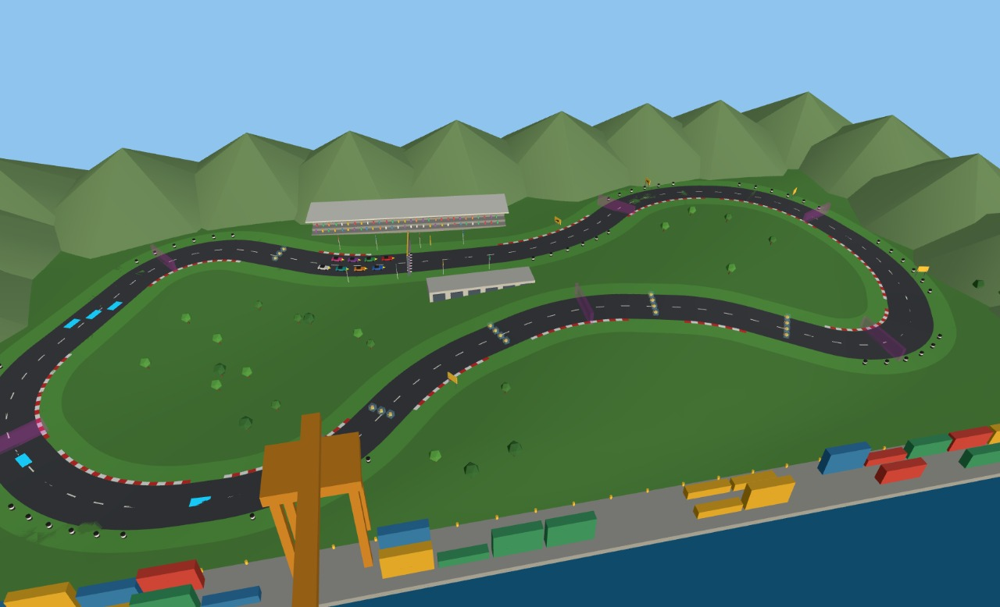

Build a labelled racing circuit with a script
A whole racing circuit from one short list of corner points: a road ribbon on rolling terrain, a harbour setting built from a handful of shared shapes, and — the part that matters to a game — every object given a name and classes at the moment it is created, so a game engine can find the start line, the checkpoints and the pickups by name. Open the editor, open the Shell tab, and paste each block in order, or run the whole generator, circuit-build.js (step 8).

const from one block is gone in the next), so each block ends by storing what later blocks need on window.c1 and begins by reading it back. And if Enter seems to do nothing after a long paste, press Esc first (it closes the autocomplete dropdown that was swallowing the keypress), then Enter. On a non-empty scene, run clearScene() first.1 Plan the lap as numbers
Decide the track before placing anything. The lap is thirteen corner points on a ground plane (x east, z south, metres). Every corner is rounded with an arc that is tangent to both straights, and a sign tells you which way it turns, so the turn balance is something you can read off instead of eyeball. The centreline is then sampled into points that carry their position, tangent and distance along the lap. Everything after this — road, kerbs, gates, start grid — is computed from those samples:
const P = [[-58,-40],[36,-30],[84,-74],[146,-56],[164,6],[128,60],[72,24],[22,12],[-30,30],[-66,70],[-126,66],[-166,18],[-122,-72]];
const ROAD_W = 14.5, CURB_W = 1.2, R_MAX = 70, n = P.length;
const unit = (a, b) => { const dx = b[0] - a[0], dz = b[1] - a[1], l = Math.hypot(dx, dz); return [dx / l, dz / l, l]; };
const corners = P.map((p, i) => {
const prev = P[(i + n - 1) % n], next = P[(i + 1) % n];
const [d0x, d0z, l0] = unit(prev, p), [d1x, d1z, l1] = unit(p, next);
const turn = Math.atan2(d0x * d1z - d0z * d1x, d0x * d1x + d0z * d1z); // positive = right turn
const phi = Math.abs(turn), sgn = Math.sign(turn), tanHalf = Math.tan(phi / 2);
const r = Math.min(R_MAX, 0.45 * Math.min(l0, l1) / tanHalf), t = r * tanHalf;
const A = [p[0] - d0x * t, p[1] - d0z * t], B = [p[0] + d1x * t, p[1] + d1z * t]; // arc start and end
const inN = sgn > 0 ? [-d0z, d0x] : [d0z, -d0x];
return { i, p, d0: [d0x, d0z], phi, sgn, r, A, B, C: [A[0] + inN[0] * r, A[1] + inN[1] * r] };
});
const balance = { right: corners.filter(c => c.sgn > 0).length, left: corners.filter(c => c.sgn < 0).length };
if (Math.min(...corners.map(c => c.r)) < ROAD_W / 2 + CURB_W + 2) throw new Error('corner radius too tight for the road width');
// Sample the centreline: the straight before each corner, then its arc. s = metres along the lap.
const pts = [], runs = [];
let s = 0;
corners.forEach((c, i) => {
const from = corners[(i + n - 1) % n].B, len = Math.hypot(c.A[0] - from[0], c.A[1] - from[1]);
const steps = Math.max(1, Math.ceil(len / 12)), [dx, dz] = c.d0;
runs.push({ corner: i, s0: s, len });
for (let k = 0; k < steps; k++) { pts.push({ x: from[0] + dx * len * k / steps, z: from[1] + dz * len * k / steps, tx: dx, tz: dz, s }); s += len / steps; }
const arcLen = c.r * c.phi, asteps = Math.max(3, Math.ceil(arcLen / 3)), a0 = Math.atan2(c.A[1] - c.C[1], c.A[0] - c.C[0]);
for (let k = 0; k < asteps; k++) {
const u = k / asteps, a = a0 + c.sgn * c.phi * u, h = c.sgn * c.phi * u;
pts.push({ x: c.C[0] + c.r * Math.cos(a), z: c.C[1] + c.r * Math.sin(a), tx: c.d0[0] * Math.cos(h) - c.d0[1] * Math.sin(h), tz: c.d0[0] * Math.sin(h) + c.d0[1] * Math.cos(h), s });
s += arcLen / asteps;
}
});
const LAP = s, N = pts.length;
// Position + tangent at any distance along the lap (binary search, then interpolate)
const frameAt = (sq) => {
sq = ((sq % LAP) + LAP) % LAP;
let lo = 0, hi = N - 1; while (lo < hi) { const m = (lo + hi + 1) >> 1; if (pts[m].s <= sq) lo = m; else hi = m - 1; }
const a = pts[lo], b = pts[(lo + 1) % N], sb = lo + 1 < N ? b.s : LAP, u = (sq - a.s) / Math.max(1e-6, sb - a.s);
let tx = a.tx + (b.tx - a.tx) * u, tz = a.tz + (b.tz - a.tz) * u; const tl = Math.hypot(tx, tz); tx /= tl; tz /= tl;
return { x: a.x + (b.x - a.x) * u, z: a.z + (b.z - a.z) * u, tx, tz };
};
window.c1 = { ROAD_W, pts, runs, LAP, N, frameAt };
({ balance, lapMetres: Math.round(LAP), samples: N });- The result: 8 right turns, 5 left, a lap of about 816 m. Change a corner point and everything downstream moves with it; the guard throws if a corner is too tight for the road width instead of producing a kinked road.
- Why samples carry a tangent. Every object that has a direction (a gate, a grid slot) is later turned with
rotation.y = atan2(tx, tz), so its local +z points along the lap. That one convention is what lets other engines know which way is forward (step 5).
2 One creation helper that labels at birth
The Shell's selector language, $S, edits and queries what exists; it cannot create the first object. Creation goes through the editor. Rather than create everything and then run a labelling pass, one small helper, make(), takes the id and classes as arguments and sets them before the object ever enters the scene. Ids are PascalCase and unique; classes are kebab-case words that say what a thing is (surface, trigger, checkpoint). Ten shared materials, no textures, and a seeded random generator so a layout is repeatable:
const mulberry = (a) => () => { a |= 0; a = a + 0x6D2B79F5 | 0; let t = Math.imul(a ^ a >>> 15, 1 | a); t = t + Math.imul(t ^ t >>> 7, 61 | t) ^ t; return ((t ^ t >>> 14) >>> 0) / 4294967296; };
const rand = mulberry(20241024); // every "random" layout choice comes from this, never Math.random()
const mat = (name, o) => { const m = new THREE.MeshStandardMaterial({ roughness: 0.9, metalness: 0, ...o }); m.name = name; return m; };
const M = {
Asphalt: mat('M_Asphalt', { color: 0x3a3d42, roughness: 0.95 }),
Grass: mat('M_Grass', { color: 0x4f8a3c, roughness: 1 }),
Paint: mat('M_Paint', { vertexColors: true, roughness: 0.8 }),
Sea: mat('M_Sea', { color: 0x1d6f9e, roughness: 0.08, metalness: 0.2 }),
Concrete: mat('M_Concrete', { color: 0x9a9a94, roughness: 0.95 }),
Glass: mat('M_Glass', { color: 0x7fd6ff, roughness: 0.1, metalness: 0.1, transparent: true, opacity: 0.35 }),
PickupCore: mat('M_PickupCore', { color: 0xffb020, emissive: 0xff7a00, emissiveIntensity: 0.6, roughness: 0.3, metalness: 0.5 }),
Gate: mat('M_GateVolume', { color: 0xff3df2, transparent: true, opacity: 0.14, roughness: 1, side: THREE.DoubleSide, depthWrite: false }),
};
// THE creation primitive: id, classes and parent are given here, once.
const make = (id, classes, geometry, material, parent, pos, ry) => {
const o = geometry ? new THREE.Mesh(geometry, material) : new THREE.Group();
o.name = id; o.userData.label = id; o.userData.customClasses = classes.split(' ');
if (pos) o.position.set(pos[0], pos[1], pos[2]);
if (ry) o.rotation.y = ry;
if (parent) parent.add(o);
return o;
};
const two = (v) => String(v).padStart(2, '0');
const withColor = (g, hex) => { const c = new THREE.Color(hex), a = new Float32Array(g.attributes.position.count * 3); for (let i = 0; i < a.length; i += 3) { a[i] = c.r; a[i + 1] = c.g; a[i + 2] = c.b; } g.setAttribute('color', new THREE.BufferAttribute(a, 3)); return g; };
// Two scene roots. Gameplay sits at the root with an identity transform, so its children's positions are world positions.
const course = make('Circuit1', 'course');
const track = make('Track', 'surface', null, null, course);
const trackside = make('Trackside', 'trackside', null, null, course);
const environment = make('Environment', 'scenery', null, null, course);
const gameplay = make('Gameplay', 'gameplay');
editor.execute(new AddObjectCommand(editor, course));
editor.execute(new AddObjectCommand(editor, gameplay));
Object.assign(window.c1, { rand, M, make, two, withColor, track, trackside, environment, gameplay });
Object.keys(M).length; // 8- Why the
M_prefix. Selectors in a runtime such as strata-play also match material names, and they match the ancestors of a matching mesh. A material called plainTriggermade$S('.trigger')return one node too many — the wholeGameplaygroup — and an earlier strata-play gave that group a physics sensor the size of the circuit (current strata-play builds a body only for a mesh or a node that carries the class itself, but the extra match is still there for any selector). A material name can never collide with a class if it never looks like one. - Why no labelling pass. A pass that runs afterwards has to guess what each mesh is from its shape and colour. Here the author already knows, so the answer is written once, at creation.
3 The road, the terrain and the sea
A ribbon is a strip along the centreline between two lateral offsets: two vertices per sample, one quad between neighbours, with uv.v running along the lap every 10 m. The ground follows the same height function H(x, z) as the road, so the road always sits on the terrain, and the relief fades to flat toward the edges:
const { ROAD_W, pts, N, make, M, track, environment } = window.c1;
const smooth = (a, b, v) => { const t = Math.min(1, Math.max(0, (v - a) / (b - a))); return t * t * (3 - 2 * t); };
const H = (x, z) => (3.2 * Math.sin(x / 62 + 0.6) * Math.cos(z / 58) + 1.6 * Math.sin((x + z) / 37)) * (1 - smooth(70, 98, Math.abs(z)));
const rightOf = (p) => [-p.tz, p.tx];
// a strip along the lap between two lateral offsets (positive = right of travel)
const ribbon = (o0, o1, dy) => {
const pos = [], uv = [], idx = [];
for (let k = 0; k < N; k++) {
const p = pts[k], r = rightOf(p);
for (const o of [o0, o1]) { const x = p.x + r[0] * o, z = p.z + r[1] * o; pos.push(x, H(x, z) + dy, z); }
uv.push(0, p.s / 10, 1, p.s / 10);
}
for (let k = 0; k < N; k++) { const a = 2 * k, b = 2 * ((k + 1) % N); idx.push(a, a + 1, b, a + 1, b + 1, b); }
const g = new THREE.BufferGeometry();
g.setAttribute('position', new THREE.Float32BufferAttribute(pos, 3)); g.setAttribute('uv', new THREE.Float32BufferAttribute(uv, 2));
g.setIndex(idx); g.computeVertexNormals();
if (g.attributes.normal.getY(0) < 0) { const ix = g.index.array; for (let i = 0; i < ix.length; i += 3) { const t = ix[i + 1]; ix[i + 1] = ix[i + 2]; ix[i + 2] = t; } g.computeVertexNormals(); } // wound the wrong way: flip
return g;
};
make('Road', 'surface road drivable', ribbon(-ROAD_W / 2, ROAD_W / 2, 0.03), M.Asphalt, track);
// terrain: a plane displaced by the same height function
const tg = new THREE.PlaneGeometry(400, 210, 40, 21).rotateX(-Math.PI / 2), tp = tg.attributes.position;
for (let i = 0; i < tp.count; i++) tp.setY(i, H(tp.getX(i), tp.getZ(i)) - 0.12);
tg.computeVertexNormals();
make('Terrain', 'surface grass offroad', tg, M.Grass, track);
make('Sea', 'scenery water', new THREE.PlaneGeometry(900, 170).rotateX(-Math.PI / 2), M.Sea, environment, [0, -0.8, 190]);
make('Quay', 'scenery', new THREE.BoxGeometry(400, 2, 14).translate(0, -0.2, 0), M.Concrete, environment, [0, 0, 98]);
Object.assign(window.c1, { H, rightOf });
editor.signals.sceneGraphChanged.dispatch();
({ roadTriangles: $S('#Road').nodes[0].geometry.index.count / 3 });The road is 454 triangles: one quad per ~3 m of arc and ~12 m of straight is all a drivable surface needs. The full script adds the kerbs, the centre dashes and the chequered start strip the same way, as extra ribbons and merged boxes (circuit-build.js, sections 7–8).
4 Shared geometry: the container stacks
The harbour is dozens of near-identical stacks of shipping containers. Define each shape once and place it many times: every mesh that uses the same geometry object shares one copy in memory and, later, one copy in the exported file. Colour comes from per-vertex colour on a single shared M_Paint material, so four colours cost four small geometries and still one material. The seeded rand() decides where gaps go, so the quay looks irregular but is identical every run:
const { rand, M, make, two, withColor, trackside } = window.c1;
const colours = ['#c0392b', '#2471a3', '#d4a017', '#2e8b57'];
const stackGeo = colours.map(hex => withColor(new THREE.BoxGeometry(12, 2.6, 2.4).translate(0, 1.3, 0), hex)); // four shapes, defined once
let stack = 0;
for (const zRow of [94.5, 100.5]) for (let x = -186; x <= 186; x += 13) {
if (rand() < 0.25) continue;
stack++;
make('ContainerStack' + two(stack), 'trackside wall', stackGeo[Math.floor(rand() * 4)], M.Paint, trackside, [x, 0.8, zRow]);
}
editor.signals.sceneGraphChanged.dispatch();
({ stacks: stack, sharedGeometries: new Set($S('.trackside').nodes.filter(o => o.geometry).map(o => o.geometry)).size });In the full script the same idea builds the crane, the grandstand with its crowd, the pit garage, thirty-six shrubs, tyre barriers and the hills: a few shared shapes, placed by the seeded generator.
5 The part a game engine wires: gates, grid, racing line, pickups
Everything a game needs to run a lap is an anchor: a named node at a known place. The scene contains no game logic; it only says where things are. All anchors live under the Gameplay root in world space:
- a
StartLineand sevenCheckpoint01..07gates, numbered in driving order; - eight
SpawnPoint01..08grid slots (empty nodes: position and facing only); - a
RacingLineof 163 ordered empty nodes, one about every 5 m down the road centre, so a bot can follow the road without reading the road mesh; - pickups: 18 item boxes (three parts each) and 5 boost pads in the full script, all classed
pickupandtrigger.
Anything with a direction gets forward: '+z' written into its data, which exports as extras.forward: the file states its own convention instead of leaving the next author to guess.
const { LAP, runs, frameAt, make, M, two, gameplay, H, rightOf } = window.c1;
const yawOf = (p) => Math.atan2(p.tx, p.tz); // rotation.y that points local +z along the lap
const fwd = (o) => { o.userData.forward = '+z'; return o; };
const startS = runs[1].s0 + runs[1].len * 0.3; // start line on the straight before the second corner
// one gate shape, placed eight times
const gate = new THREE.BoxGeometry(14.5 + 4, 5, 1.2);
const f0 = frameAt(startS);
fwd(make('StartLine', 'trigger start-line', gate, M.Gate, gameplay, [f0.x, H(f0.x, f0.z) + 2.5, f0.z], yawOf(f0)));
for (let k = 1; k <= 7; k++) {
const c = frameAt(startS + LAP * k / 8);
fwd(make('Checkpoint' + two(k), 'trigger checkpoint', gate, M.Gate, gameplay, [c.x, H(c.x, c.z) + 2.5, c.z], yawOf(c)));
}
// eight grid slots behind the line, two abreast
for (let k = 0; k < 8; k++) {
const g = frameAt(startS - 9 - Math.floor(k / 2) * 7 - (k % 2) * 3.5), r = rightOf(g), o = (k % 2 ? 1 : -1) * 3.2;
const x = g.x + r[0] * o, z = g.z + r[1] * o;
fwd(make('SpawnPoint' + two(k + 1), 'spawn-point', null, null, gameplay, [x, H(x, z) + 0.3, z], yawOf(g)));
}
// racing line: empty nodes down the road centre in driving order; the last is followed by the first
const count = Math.round(LAP / 5), line = make('RacingLine', 'racing-line', null, null, gameplay);
for (let k = 0; k < count; k++) {
const f = frameAt(startS + LAP * k / count);
fwd(make('RacingLine' + String(k + 1).padStart(3, '0'), 'racing-line-point', null, null, line, [f.x, H(f.x, f.z) + 0.03, f.z], yawOf(f)));
}
line.userData.closed = true;
// item boxes: one definition (a glass shell round a core), a row of four across the longest straight
const shellGeo = new THREE.BoxGeometry(1.7, 1.7, 1.7), coreGeo = new THREE.BoxGeometry(0.8, 0.8, 0.8).rotateY(Math.PI / 4);
const itemBoxes = make('ItemBoxes', 'pickup-set', null, null, gameplay);
const run = runs.filter((r, i) => i !== 1).sort((a, b) => b.len - a.len)[0];
const fm = frameAt(run.s0 + run.len / 2), rm = rightOf(fm);
[-5.1, -1.7, 1.7, 5.1].forEach((o, i) => {
const id = 'ItemBox' + two(i + 1), x = fm.x + rm[0] * o, z = fm.z + rm[1] * o;
const b = make(id, 'pickup item-box trigger', null, null, itemBoxes, [x, H(x, z) + 1.5, z], yawOf(fm));
make(id + 'Shell', 'item-box-part', shellGeo, M.Glass, b);
make(id + 'Core', 'item-box-part', coreGeo, M.PickupCore, b);
});
editor.signals.sceneGraphChanged.dispatch();
({ gates: $S('.checkpoint').count(), grid: $S('.spawn-point').count(), racingLinePoints: count, itemBoxes: $S('.item-box').count() });Gameplay is its own root, not a child of the circuit. strata-play's physics harness copies each labelled node's position straight onto a body and assumes the node is an untransformed child of the scene root. Keeping the anchors at the root with an identity transform makes their positions world positions in every runtime, so nothing has to guess an offset.6 Light, and the $S passes
Now $S earns its keep: after creation, settings that apply to a class of things are one-liners. Receiving shadows belongs to everything classed surface; casting to scenery and trackside objects; the invisible trigger volumes do neither. The sun needs one extra line that is easy to miss, explained below:
const { environment } = window.c1;
const sunlight = new THREE.DirectionalLight(0xfff1d6, 2.2);
sunlight.name = 'Sunlight'; sunlight.userData.label = 'Sunlight'; sunlight.userData.customClasses = ['effect'];
sunlight.position.set(-150, 220, -120);
sunlight.lookAt(0, 0, 0); // see the note: the export needs a rotation, not just a position
sunlight.castShadow = true;
Object.assign(sunlight.shadow.camera, { left: -230, right: 230, top: 140, bottom: -140, near: 10, far: 600 });
sunlight.shadow.mapSize.set(2048, 2048);
const sky = new THREE.HemisphereLight(0xbfe3ff, 0x6a7f4a, 0.9);
sky.name = 'SkyLight'; sky.userData.label = 'SkyLight'; sky.userData.customClasses = ['effect'];
environment.add(sunlight, sky);
setBackground('#a9d4ee');
$S('.surface').receiveShadow(true);
$S('mesh.scenery').castShadow(true);
$S('mesh.trackside').castShadow(true);
$S('.trigger').castShadow(false);
editor.signals.sceneGraphChanged.dispatch();
'ok';lookAt, the sun in the exported file points along −z, edge-on to the ground, and lights almost nothing. The exporter prints "Light direction may be lost" whether or not you added it, so the warning is not the check: read the file (step 9).7 Check it
Before exporting, confirm the two properties a downstream engine depends on: every labelled object resolves by name, and the whole set can be listed from the scene alone. Two lines do it:
const names = [];
editor.scene.traverse(o => { if (o !== editor.scene && o.userData.label) names.push(o.name); });
const notAddressable = names.filter(nm => $S('#' + nm).count() !== 1);
({ labelled: names.length, notAddressable: notAddressable.length, triggers: $S('.trigger').count(), gameplayIsATrigger: $S('.trigger').nodes.some(o => o.name === 'Gameplay') });The full check, circuit-verify.js, adds a third property — totality: it fires 21 sampled operations at the scene (some deliberately wrong, such as scale with factor: 'big') and requires each to either apply to every matched node or fail cleanly, never half-apply and never write a NaN. It earned its place: its first run found that move, scale, rotate and duplicate reported success while writing NaN into transforms when an argument was missing or not a number. That was an editor bug, now fixed. The check tests this scene, not the editor in general: a pass does not prove the operations are safe everywhere.
8 Run the whole thing, and get the same bytes every time
The blocks above are the skeleton. circuit-build.js is the complete generator: the same code plus kerbs and markings, the harbour crane, grandstand and crowd, pit garage, shrubs, hills, tyre barriers, all 18 item boxes and 5 boost pads, and the camera. On a cleared scene, paste it into the Shell (it takes a few seconds). It is deterministic, which is worth designing for from the start:
- All randomness is seeded. Layout choices use
rand()from step 2. Object uuids come fromMath.random, which the script swaps for a second seeded generator while it builds and restores afterwards, so the uuids are stable too. - Serialise only when the editor has settled. The editor fills in per-node
descriptorsasynchronously after a build. A scene saved too early differs from one saved a moment later. circuit-serialize.js waits until that count stops changing, then writes a project with a fixed camera and an empty history.
Built and serialised twice, the scene came out byte-identical (1,952,098 bytes, SHA-256 beginning 3d248fb9). If yours differs, something in your run depended on time or order.
// from circuit-build.js: the two seeded generators
const SEED = 20241024, UUID_SEED = 7777;
const rand = mulberry(SEED);
const realRandom = Math.random;
Math.random = mulberry(UUID_SEED);
try { /* ...the whole build... */ } finally { Math.random = realRandom; }9 Export it and read the file back
Open the Export tab and click the GLB label. Then check the file itself, not the editor's idea of it. This reads a GLB's JSON chunk from a file on disk; save it as inspect-glb.mjs and run node inspect-glb.mjs <the downloaded file> (the download is named after the scene: the file it was loaded from, the scene's own name, or the one thing in it, and scene.glb only when none of those says anything):
import { readFileSync } from 'node:fs';
const b = readFileSync(process.argv[2]);
const j = JSON.parse(b.toString('utf8', 20, 20 + b.readUInt32LE(12))); // the JSON chunk follows the 12-byte header and 8-byte chunk header
const sun = j.nodes.find(x => x.name === 'Sunlight');
console.log({
nodes: j.nodes.length, meshes: j.meshes.length,
materials: [...new Set(j.materials.map(m => m.name))].sort(),
sunForward: sun && sun.matrix ? [-sun.matrix[8], -sun.matrix[9], -sun.matrix[10]].map(v => +v.toFixed(2)) : null,
logic: j.scenes[j.scene].extras && j.scenes[j.scene].extras['strata:logic'],
});For the full script's scene expect nodes: 436, ten M_ materials, a sunForward that points down and toward the middle of the track (about [0.51, -0.75, 0.41]), meshes: 41 and logic: 'outputs/track.js'. The step-by-step blocks alone give a smaller scene (244 nodes, eight materials, no logic, since only the full script sets it) but the same sun direction. Each check below is a trap that was hit while building it:
- Materials counted 236, not 10. The script shared ten materials, but an exporter that clones each mesh's material gives every mesh its own copy, and a file-level count shows it. The editor's export clone now clones each distinct material and geometry once, so sharing survives into the file (the file dropped from 1.97 MB to 0.87 MB). Always count what is in the file.
- The sun pointed along −z. The
lookAtfrom step 6.sunForwardis the check. extras.classesmust be an Array. The editor keeps classes inuserData.customClasses; the export copies them toextras.classes, which is what strata-play and other engines read.- The scene can name its own logic. The build script sets
strata:logicon the scene's own data (exported as the glTF scene'sextras), so strata-play loadsoutputs/track.jswithout relying on the filename matching.
10 Play it in strata-play
Commit the GLB to a GitHub repo and open it in strata-play by repo and file: #repo=<owner>/<repo>&file=outputs/track.glb. With no entry module it falls back to an orbit view, which is a good way to check the scene by eye. Every label should resolve from the page's console; this is the same query a game uses:
// in strata-play's sandbox frame
[ctx.$S('#StartLine').count, ctx.$S('.checkpoint').count, ctx.$S('.spawn-point').count, ctx.$S('.trigger').count]
// → [1, 7, 8, 31] (31 = StartLine + 7 checkpoints + 18 boxes + 5 pads; 32 would mean a material is named like a class)- Trigger boxes follow the gate's own orientation, in current strata-play. Each trigger body sits at the node's world position and rotation, with a box taken from its local geometry bounds, so a rotated gate keeps its real footprint. An earlier strata-play fitted a world-axis-aligned box that was larger than a rotated gate. Whichever version you run, check a gate crossing in the gate's own local space, which does not depend on how the runtime shapes its sensor.
- The look is the runtime's job. A GLB carries no tone mapping, shadow flags, environment or post-processing, so the same file looks flat by default and rich once the entry module sets them. The two images below are the same file and the same camera.

pit-lane), label a few nodes with it in make(), and query it with $S('.pit-lane'): that is the whole mechanism a game uses to find things.Credits and licences
People
- Tejaswi Gowda (script)
Assets
None used.
Tools
None used.